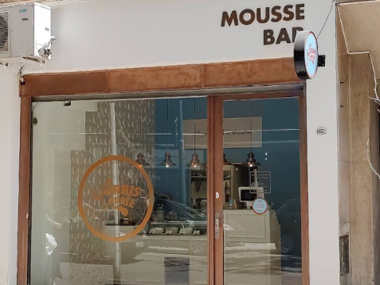
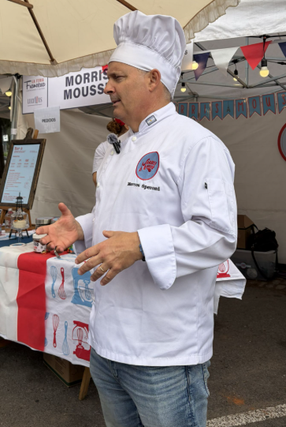

MF
¿Cuándo arrancó Morris Mousse?
El emprendimiento de mousses arrancó hace ocho años. Mientras trabajaba en otra empresa, empecé a ver el tema de las mousses. Me pareció interesante para proponer e hice una primera muestra en una Feria Francesa —que se hacía en la embajada—. En esa feria el producto anduvo muy bien y dije: "bueno, acá hay que hacer algo".
MF
¿De qué trata el emprendimiento?
Tengo un local de mousses que abrí hace cuatro años. Es un bar de mousses con diferentes gustos, a los que también se les puede agregar toppings. Es lo que se llama monoproducto: nos especializamos en mousse.

MF
¿Cuál es el mousse que más los identifica?
La típica mousse de chocolate amarga. Usamos buena materia prima, lo que nos da una buena calidad. También hay muchos sabores, como pistacho y chocolate blanco, o chocolate amargo y noisette.
MF
¿Cómo te formaste para empezar este proyecto?
Yo ya estaba estudiando cocina, también estudié Administración de Empresas y trabajaba en bancos, pero encontré la pasión en la cocina. Estudié en el IAG, Profesional Gastronómico y Pastelería Profesional.
MF
¿Cómo se sintió dejar el trabajo en el banco y pasar a tener tu propio emprendimiento?
Es algo completamente distinto y un cambio total. Quizás uno no sabe bien cómo te va a ir en el trabajo y cómo vas evolucionando en la carrera. Así que si podés hacer el cambio por algo mejor y algo que te llena más, es espectacular.

MF
¿Esta es tu primera feria?
No, este debe ser el octavo año que participamos en la feria. Desde el año pasado que soy miembro de Lucullus.

MF
¿Sentís que valió la pena?
Sí, totalmente. Prefiero seguir haciendo esto toda la vida. De un trabajo en oficina, estar sentado, hacer informes, hablar con accionistas y otro montón de cosas, a estar en un proyecto propio: a mí me cambió muchísimo, para bien.
"Prefiero seguir haciendo esto toda la vida. A mí me cambió muchísimo, para bien."